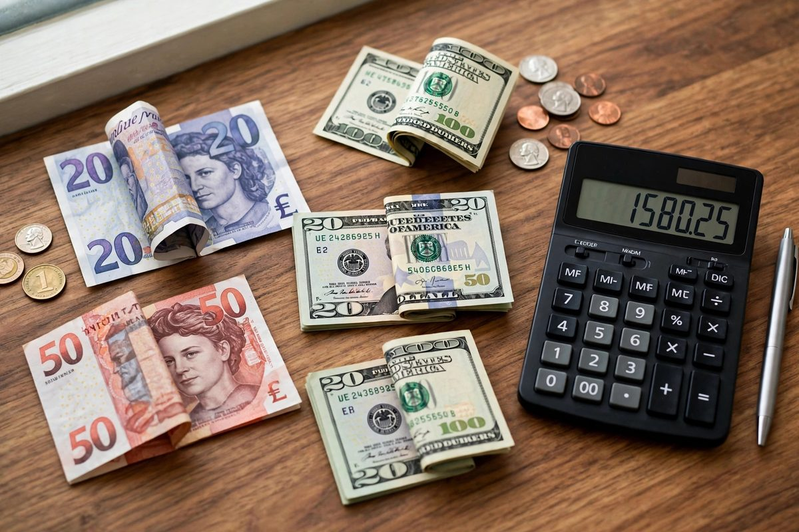

GBP to USD: Converting Pounds to Dollars in 2026

The pound-dollar rate
The pound to dollar rate, known to traders as cable, is one of the oldest and most watched exchange rates in the world. It reflects the difference between UK and US interest rates, inflation, and economic performance, and it is sensitive to British political news in a way few other rates are. In recent years it has traded roughly between 1.20 and 1.35 dollars per pound, well below the levels above 1.50 seen before 2016, a reminder that exchange rates can shift for years after a major political change.
For anyone converting pounds to dollars, the rate on the day matters, but the provider's margin matters more. A bank spread of three percent on 10,000 pounds costs 300 pounds, which dwarfs a one percent move in the market rate. Always check the live mid-market rate first, then compare what different providers actually deliver.
Cheapest ways to convert GBP to USD
For transfers, online specialist services are usually cheapest, with total costs under one percent for larger amounts. They are transparent about the rate and fee, and they deliver to a US bank account within a day or two. High-street banks typically charge three to five percent in total, and they often hide the cost in the rate rather than in a visible fee. For smaller amounts, a multi-currency account can be just as cheap and more convenient.
For spending in the US, a fee-free card is the best option. UK cards that charge no foreign transaction fee convert at close to the mid-market rate, and paying in dollars rather than pounds avoids dynamic currency conversion. Withdrawing dollars from a US ATM with a fee-free card is also reasonable, though US ATMs often add a fixed fee of a few dollars per withdrawal.
Mistakes that cost money
The classic mistake is converting at the airport or hotel, where spreads are wide and the traveller has no alternative. Another is letting a shop convert the payment into pounds at the till, which uses a poor rate dressed up as a convenience. A third is converting a large sum in a panic after a bad news headline, locking in a poor rate when waiting a few days might have been better, though timing the market is unreliable and no one should convert money they do not need to move.
For large transfers, such as a house deposit or a tuition payment, consider a limit order or a forward contract if your provider offers one. These tools let you target a rate or lock one in for a future payment, removing the anxiety of daily moves. For ordinary travel money, however, the simplest rule is best: use a fee-free card, pay in dollars, and compare providers before any large transfer.
Putting It Into Practice
If you regularly move money between pounds and dollars, set up a rate alert at a level you would be happy with, and set up an account with a specialist provider so you can act quickly when the alert fires. For travel, check that your card charges no foreign transaction fee, and practise declining dynamic currency conversion at the till, since the offer is designed to sound helpful. A few minutes of preparation before each trip saves more than any amount of haggling over the rate itself.
Frequently Asked Questions
How many dollars do I get for 100 pounds?
At 1.27 dollars per pound, about 127 dollars at the mid-market rate, less after any spread or fee.
What is the cheapest way to send pounds to the US?
An online specialist transfer service, usually under one percent in total cost, compared with three to five percent at a high-street bank.
Should I pay in pounds or dollars in the US?
Pay in dollars. Paying in pounds triggers dynamic currency conversion at a poor rate.